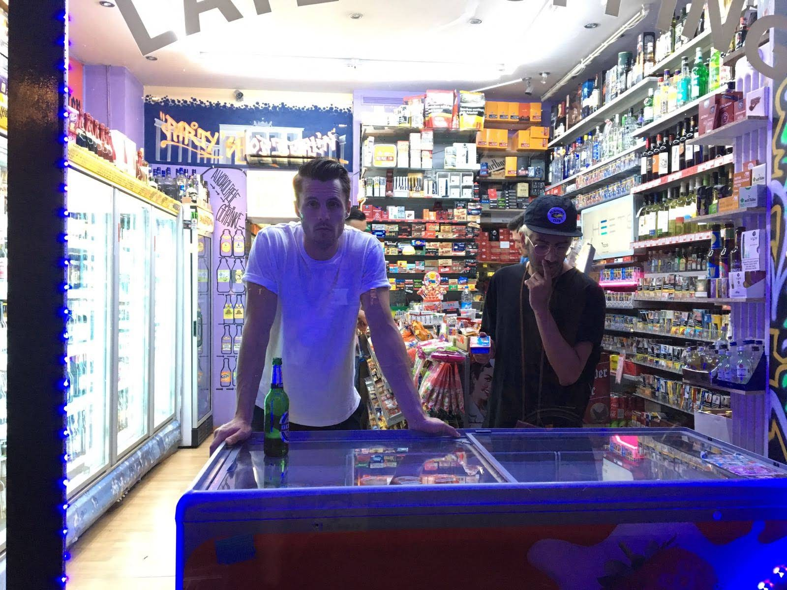
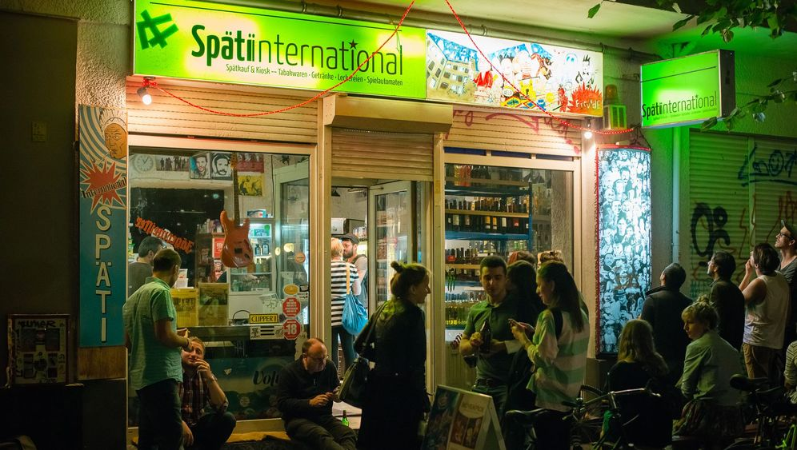
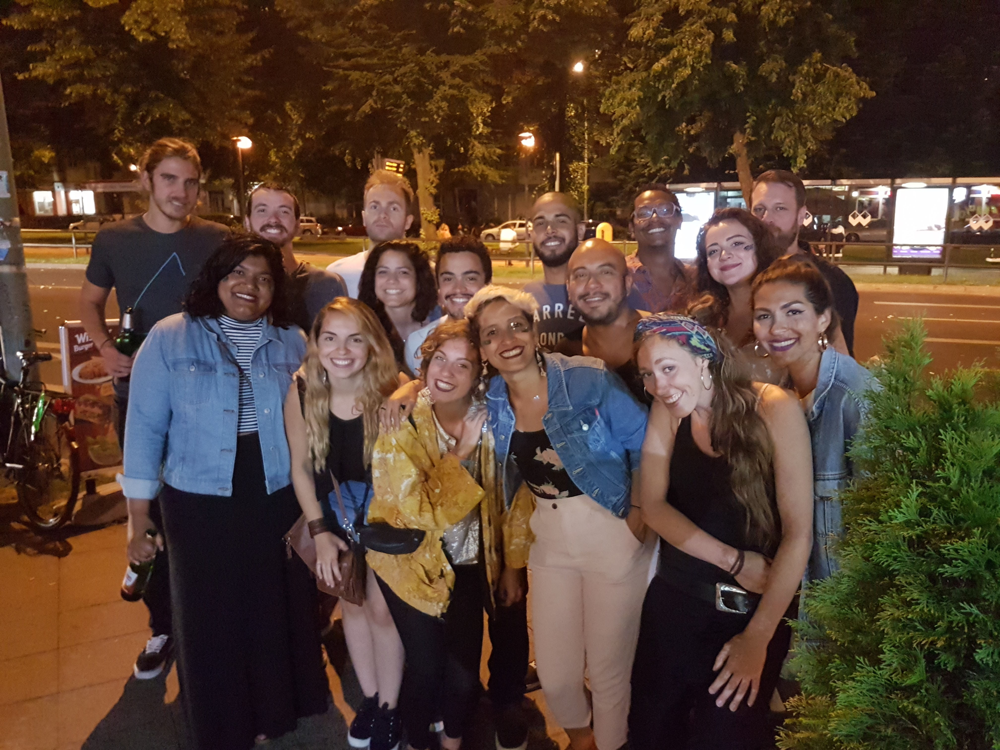
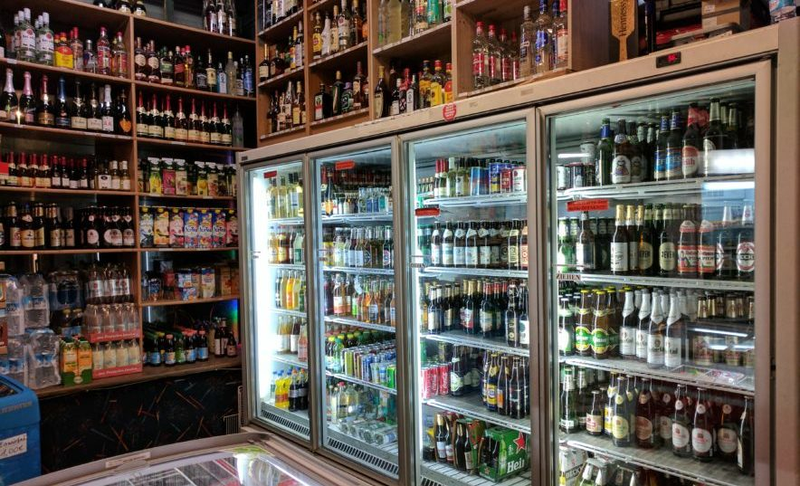

SPÄTI HOPING: A BERLIN TREASURE
By Grasi 02.06.20 Summer is almost at the corner and the days are finally getting warmer you might feel like it's the best time for a scape out of the city. This year we may have to rethink how we are traveling and yet enjoy the summer days out. As Berlin is a multi-faced city where you can find pretty much everything we thought of some getaways that won't need too much traveling and therefore corona friendly. The area is located just about 30 minutes away from Gesundbrunnen and the feeling is like you are far away from the city. We found this route through the app Komoot that shows you all the hiking routes around Berlin and it’s separated by levels of difficulty. This route is considered a moderate Hike and it took us around 5 hours to complete it. We found the tracking route on this app Komoot and there you can find many more tracking routes in the area
Briese is a river located in the Birkenweder area and just about 30 min away from the Berlin city center. To get there, you will need an ABC ticket and take the line S1 if you are leaving from Friedrichstraße or Gesundbrunnen or the line S8 if you leaving from Ostkreuz to the Sbahn Station Birkwnweder. From there you will take a walk around the neighborhood to get to the trail.
It’s a peaceful, beautiful and idyllic area. It really is worth it the effort. Also, there’s a small lake for those who feel like a dip in the water in the hot days. Of course, no restaurant is open due to COVID but you can bring your own food, there are areas suitable to sit and take a break, just make sure to not leave any rest behind you.
Hope you enjoy a great Späti hoping this summer